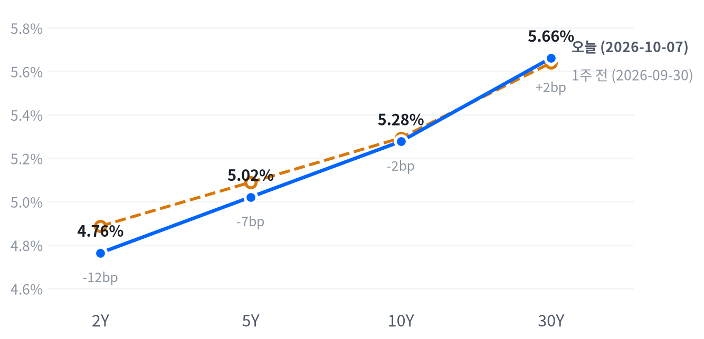

수요일 뉴욕 증시는 지수보다 장기 국채금리가 하루 흐름을 좌우했다. 10년물·30년물 금리가 오전에 2002년 이후 최고까지 올랐다가 10년물 입찰 수요가 강하자 물러났다. S&P500은 0.22% 내리는 데 그쳤지만 러셀2000과 산업재는 크게 밀렸다.
강한 입찰에도 30년물이 종가로 오른 만큼 소형주·산업재·주택건설 같은 금리 민감 후보 테마의 가격 근거는 약해졌다고 본다. 이 판단은 10월 8일 30년물 입찰과 9일 종가에서 시험한다.
장기 국채금리가 하루를 지배했다. FXStreet와 CNBC에 따르면 오전에 10년물과 30년물 금리가 2002년 이후 최고까지 올랐다. 오후 10년물 입찰은 입찰 전 거래 수익률보다 1.7bp 낮은 수익률에 마감했다. 강한 입찰 수요에 금리는 물러났다. 그래도 종가로는 2년물이 내리고 30년물이 올랐다. 주가지수 낙폭은 작았고 하락은 소형주와 산업재에 몰렸다.
입찰이 강했는데도 장기물이 올랐다는 점을 오늘의 핵심으로 본다. 발행 물량을 소화하기 어려워 장기금리가 오른다는 설명은 오늘 입찰로 약해졌다. 10년물 기대인플레도 2.36%로 그대로였다. 남는 설명은 재정 부담이나 해외 장기금리 동조, 또는 기대인플레 지표에 잡히지 않는 물가 위험 프리미엄이다. 같은 날 뉴욕연은 조사에서 소비자의 1년 기대인플레는 3.9%로 올랐다. Scotsman Guide는 9월 회의 의사록에서 대부분의 참가자가 연말까지 추가 인상을 적절하다고 봤다고 전했다. 장기물에 얹힌 프리미엄을 오늘 기준으로 잰 값이 없어 시장 기대와 우리 해석의 차이는 아직 크기를 말할 수 없다. 30년물 입찰을 앞두고 장기물을 미리 판 헤지 매도였다는 대안도 남는다.
장기금리가 이 자리에 머무는 동안 소형주·산업재·주택건설·부동산처럼 금리에 민감한 후보 테마의 가격 근거는 약해진다고 본다. 오늘 산업재 하락에는 캐터필러 등급 하향이라는 개별 재료가 섞여 있어 테마 전체의 판단으로 넓히기 전에 장기금리 경로를 먼저 확인한다. 반도체·AI 하드웨어는 메모리가 오르고 AI 인프라가 내려 테마 안에서 갈렸다. 3개월 시계로 새 아이디어를 낼 근거는 아직 없고 30년물 입찰과 다음 주 CPI까지는 관찰에 머문다.
10월 8일 13:00(ET) 30년물 입찰이 테일을 내며 30년물만 오르면 오늘의 장기물 상승은 공급 부담이었다고 고쳐 본다. 입찰이 무난한데도 5년물과 30년물의 금리차가 더 벌어지면 수급 밖 요인이라는 판단을 굳힌다. 10월 9일 종가에서 그 금리차가 53.1bp 아래로 좁혀지면 장기물 프리미엄 판단을 거둔다. 그다음 분기점은 10월 14일 08:30(ET) 9월 CPI다.
| 지수 | 종가 | 등락률 | 기준일 |
|---|---|---|---|
| 닛케이225 | 70,683.98 | +1.05% | 10월 6일 |
| 항셍 | 24,280.56 | +1.00% | 10월 6일 |
| 상해종합 | 3,842.20 | +0.31% | 9월 30일 |
| DAX | 25,449.19 | +0.77% | 10월 6일 |
| FTSE100 | 10,541.70 | +0.42% | 10월 6일 |
| 유로스톡스50 | 6,272.23 | +0.48% | 10월 6일 |
| VIX | 15.08 | +0.47% | 10월 7일 |
아시아·유럽 지수는 확보된 가장 최근 마감 기준이다. 상해종합은 9월 30일, 나머지는 10월 6일 화요일 마감이다.
아시아·유럽은 올랐지만 미국은 내려 방향이 엇갈렸다. 확보된 최신 마감인 10월 6일에 닛케이가 1.05%, 항셍이 1.00% 올랐다. 유럽도 DAX가 0.77% 오르는 등 세 지수가 모두 올랐다. 미국은 그 흐름을 이어받지 못하고 세 지수가 모두 내렸다. 상해종합은 9월 30일 마감이 최신이다. VIX는 15.08로 거의 움직이지 않았고 지난 두 해 가운데 낮은 쪽 14% 안에 머물렀다.
야간 선물은 내림세로 정규장을 맞았다. S&P 선물(ES)은 전날 20:30(ET) 7,885에서 고점을 찍은 뒤 이날 08:00 7,833까지 밀렸다. 나스닥100 선물(NQ)도 같은 08:00에 저점을 찍었고 야간 폭은 1.01%였다. 같은 시간대 금도 하루 저점까지 밀렸다. FXStreet는 달러와 국채금리의 반등을 배경으로 들었다. 현물은 S&P -0.33%, 나스닥 -0.59%, 러셀2000 -0.49%의 갭으로 출발했다.
평균적인 종목이 지수보다 더 내렸다. 참여도는 고르게 내림이었다. 동일가중 S&P에서 시가총액 가중 지수를 뺀 수익률 차이가 -0.57%p로, 하락이 대형주 몇 개가 아니라 여러 종목에 퍼졌다. 마감 위치는 지수마다 갈렸다. 나스닥은 고점권, S&P는 하루 범위의 중간, 러셀2000은 저점권에서 끝났다.
고점권·저점권 경계는 최근 2,256거래일의 일간 종가 위치 이력으로 다시 잰 기준이다.
장기금리가 오전을, 입찰과 의사록이 오후를 갈랐다. Quartz는 다우가 장중 451포인트까지 밀렸다고 전했다. 여러 매체가 금리와 유가 상승을 오전 하락의 배경으로 들었다. 13:00(ET) 입찰과 14:00 의사록 공개가 지난 뒤 S&P와 나스닥은 오후 늦게 하루 고점을 찍었다. 입찰이 주가 반등을 이끌었다고 설명한 같은 날 출처는 아직 없다. 장 마감 뒤에는 삼성전자가 3분기 잠정 영업이익 약 107.4조 원을 발표했다고 CNBC가 전했다.
| 지수 | 종가 | 등락률 |
|---|---|---|
| S&P500 성장주 | 145.89 | -0.16% |
| S&P500 | 7,801.77 | -0.22% |
| 나스닥 | 27,538.69 | -0.22% |
| S&P500 가치주 | 230.78 | -0.38% |
| 다우존스 | 51,179.87 | -0.66% |
| 러셀2000 | 2,793.20 | -1.31% |
| 섹터 | 등락률 |
|---|---|
| 헬스케어 | +1.03% |
| 유틸리티 | -0.02% |
| 필수소비재 | -0.12% |
| 기술 | -0.30% |
| 경기소비재 | -0.32% |
| 커뮤니케이션서비스 | -0.35% |
| 금융 | -0.48% |
| 에너지 | -0.61% |
| 부동산 | -1.29% |
| 소재 | -1.51% |
| 산업재 | -2.18% |
S&P500은 7,802로 내렸지만 최근 2년(504거래일) 가운데 이보다 높았던 날이 하루뿐인 자리를 지켰다. 그 하루가 전날의 사상 최고 종가다. 나스닥도 27,539로 같은 자리에 있다. 두 지수의 오늘 움직임은 여느 날 움직임의 3분의 1에도 못 미쳤다. 크게 움직인 것은 러셀2000이다. 2,793으로 평소보다 큰 폭으로 내려 같은 기간 높은 쪽 22% 안으로 물러났다.
하루 움직임은 최근 60거래일 평균 하루 폭 대비 S&P 0.31배, 나스닥 0.21배, 러셀2000 1.58배다.
S&P는 오전에 7,763까지 밀린 뒤 오후에 되올라 7,800선 위에서 끝났다. 나스닥은 개장 직후가 하루 저점이었고 15:30(ET)에 고점을 찍어 그 부근에서 마감했다. 러셀2000은 시가 2,816이 그대로 하루 고점이었고, 오전 저점에서 거의 회복하지 못했다. 엔비디아는 개장 직후 고점에서 오후 저점까지 밀렸다.
러셀2000의 낙폭은 장기금리 경로와 맞지만 원인으로 확인된 것은 아니다. Benzinga는 장중 기사에서 국채금리가 오르는 가운데 러셀2000이 S&P와 함께 밀렸다고 전했을 뿐이고, 소형주를 직접 다룬 원인 기사는 찾지 못했다. 경로는 대형주와 달랐다. 장기금리가 2002년 이후 최고에 오른 오전에 저점을 만든 뒤, 입찰과 의사록이 지나고 대형 기술주가 되오를 때도 따라 오르지 못했다. 산업재와 부동산이 1% 넘게 내린 것도 같은 방향이지만 산업재에는 캐터필러 등급 하향이라는 개별 재료가 섞여 있다.
지수 낙폭 0.22% 가운데 산업재가 -0.12%포인트로 가장 많이 깎았고 기술이 -0.10%포인트로 뒤를 이었다. 헬스케어는 +0.10%포인트로 유일하게 지수를 받쳤다. 금융(-0.05%포인트)과 경기소비재(-0.04%포인트)의 몫은 작았다. 섹터로 설명되지 않는 부분은 +0.07%포인트다. 헬스케어 상승의 당일 재료는 확인되지 않았다.
섹터 기여는 최근 252거래일 회귀로 추정했고 설명력은 0.976이다. 소재·부동산은 추정에서 식별되지 않아 뺐다.
이 하락은 지수를 끌어내렸다기보다 지수 밑의 여러 종목에 퍼졌다고 본다. 성장주(-0.16%)가 가치주(-0.38%)보다 덜 내렸다. 오후에 대형 기술주는 되올랐지만 소형주는 그러지 못했다. 주식과 금리는 최근 60거래일 느슨하게 반대로 움직여 왔고 장기금리가 오른 오늘도 그 관계 안에 있었다. 이 상승장의 지수 레벨은 믿을 만하지만 그 밑의 평균적인 종목은 금리 부담을 더 크게 받고 있다.
주식과 금리의 최근 60거래일 상관계수 -0.391(직전 60거래일 -0.574).
| 만기 | 종가 | 전일比(bp) | 1주 전 | 주간 변화(bp) |
|---|---|---|---|---|
| 2Y | 4.764% | -2.7 | 4.887% | -12.3 |
| 5Y | 5.021% | -0.7 | 5.089% | -6.8 |
| 10Y | 5.277% | +0.6 | 5.293% | -1.6 |
| 30Y | 5.661% | +2.0 | 5.639% | +2.2 |
네이버 국채 종가 기준(2026-10-07, 전 만기 동일 기준일). 1주 전은 9월 30일.

1주 전(9월 30일)보다 2년물은 12.3bp 내리고 30년물은 2.2bp 올라 커브가 가팔라졌다. 앞쪽 하락이 주도한 불 스티프닝이다.
30년물 금리는 5.661%로 끝나 최근 2년(504거래일) 가운데 이보다 높았던 날이 하루뿐이다. 10년물도 5.277%로 이보다 높았던 날이 이틀뿐이다. 장중에는 더 높았다. FXStreet와 CNBC는 10년물이 5.35%대, 30년물이 5.72%대까지 올라 2002년 이후 최고를 기록했다고 전했다. 종가로 보면 30년물은 평소 크기로 움직였고 10년물은 거의 멈춰 있었다.
10년물 하루 움직임은 최근 60거래일 평균 하루 폭의 0.18배, 30년물은 0.52배다.
하루로 보면 앞쪽은 내리고 장기물은 오른 트위스트형 스티프닝이다. 2s10s는 51.3bp로 3.3bp, 5년물과 30년물의 금리차는 64.0bp로 2.7bp 넓어졌다. 한 주로 보면 2년물이 크게 내리는 동안 30년물은 올라 9월 30일 55.0bp였던 5년물·30년물 금리차가 9.0bp 벌어졌다. 2년물이 의사록에도 내린 것은 12월 인상이 이미 대부분 가격에 들어 있어서일 수 있다. 공개 전후를 같은 시각으로 맞춘 FedWatch 비교가 없어 확인하지는 못했다.
공급 부담은 이 스티프닝을 설명하지 못한다. 10년물 390억 달러 입찰은 5.300%에 낙찰돼 investingLive 기준으로 입찰 전 거래 수익률(5.317%)보다 1.7bp 낮았다. 응찰배율은 2.77배, 딜러 몫은 2.5%에 그쳤고 간접 낙찰은 77.8%였다. CNBC는 간접 낙찰을 80.3%로 집계해 재무부 발표 수치와 차이가 난다. CNBC에 따르면 입찰 뒤 10년물은 24년 고점에서 물러나 5.286% 안팎에서 거래됐다.
오늘 움직임을 실질금리와 기대인플레로 나누지는 못한다. 10년물 실질금리가 10월 6일까지만 나와 있어서다. 같은 날짜로 맞춘 최신 분해(10월 6일)에서 10년물 4bp 하락은 전부 실질금리 몫이었고, 한 주 1bp 상승은 기대인플레 몫이었다. 오늘 10년물 기대인플레는 2.36%로 그대로였고 유가도 WTI와 브렌트가 엇갈려, 기대인플레가 장기물을 밀어 올렸다고 보기는 어렵다. 10년물 기간프리미엄 추정치는 10월 2일 1.08%포인트가 최신이고 닷새 사이 6.4bp 올랐다. 하이일드 스프레드는 10월 6일 3.03%포인트로 하루 9bp 좁혀져 신용 쪽 긴장은 보이지 않았다. 오늘 장기물 상승의 직접 원인은 확인되지 않았다.
5년 뒤 5년 명목금리는 10월 6일 기준 5.51%로 하루 5bp 내렸다. 실질 기준으로는 3.16%다. 기대인플레 지표와의 교차검증은 이번에 할 수 없었다. 위험 프리미엄이 섞인 값이라 시장이 먼 구간 금리를 이 수준에서 거래한다는 정도로 읽는다.
| 통화쌍 | 종가 | 등락률 |
|---|---|---|
| DXY | 102.25 | +0.41% |
| USD/KRW | 1,339.74 | -0.30% |
| USD/JPY | 158.30 | +0.21% |
| EUR/USD | 1.1254 | +0.33% |
달러지수는 102.25로 올라 평소 크기로 움직였다. Plus500은 이를 17개월 만의 달러 고점으로, FXStreet는 2025년 4월 이후 수준으로 표현했다. 그래도 레벨은 최근 2년(504거래일)의 한가운데쯤이다. 원/달러는 1,340원으로 내려 같은 기간 이보다 낮았던 날이 이틀뿐인 원화 강세 자리를 이어 갔다. 엔/달러는 158.30엔으로 높은 쪽 24% 안에 있다.
달러지수의 하루 움직임은 최근 60거래일 평균 하루 폭의 1.35배다.
달러 강세에 가장 잘 맞는 경로는 위험회피라고 본다. 2년물 금리가 내린 날 달러가 올라 금리차로는 설명되지 않는다. 주가가 내린 날 달러가 오른 것은 주식과 달러가 최근 60거래일 느슨하게 반대로 움직여 온 관계와 맞다. FXStreet처럼 의사록이 연말 추가 인상을 확인했다고 읽으면 달러를 받친 재료가 되지만, 같은 시각의 금리 반응이 없어 가리지 못한다. 통화쌍은 서로 맞지 않는다. 달러지수가 오른 날 유로/달러도 0.33% 올라 시세 기준 시각의 차이일 수 있는 유로 쪽 방향은 근거로 쓰기 어렵다. 엔/달러는 새벽 02:00(ET) 158.51엔 고점에서 오전에 157.84엔까지 밀렸다.
주식과 달러의 최근 60거래일 상관계수 -0.295(직전 60거래일 -0.523).
| 품목 | 종가 | 등락률 |
|---|---|---|
| WTI | $88.82 | -0.69% |
| Brent | $100.92 | +0.34% |
| 천연가스 | $3.261 | +4.72% |
| 금 | $4,134.90 | -1.25% |
금이 달러 강세에 밀렸다. 4,135달러로 내려 평소 크기의 하락이었고 레벨은 지난 두 해의 한가운데쯤이다. WTI는 88.82달러로 여느 날 움직임의 4분의 1에도 못 미치게 내렸지만 같은 기간 높은 쪽 18% 안의 높은 자리에 있다. 브렌트는 100.92달러로 100달러선 위를 지켰다. 가장 크게 움직인 것은 천연가스로 4.72% 올랐지만 확인된 재료는 없다.
하루 움직임은 최근 60거래일 평균 하루 폭 대비 금 0.91배, WTI 0.23배다.
WTI는 개장 직후 90.98달러로 하루 고점을 찍은 뒤 13:30(ET) 87.96달러까지 밀렸다. EIA 원유 재고가 예상(190만 배럴 증가)과 달리 318.6만 배럴 줄었는데도 유가는 90달러 위를 지키지 못했다. FXStreet는 중동 수출 회복과 달러 강세를 원인으로 들었다. 같은 날 IEA 회원국이 1억 배럴 비축유 방출 가속을 지지했다고 전했다. 브렌트는 올라 WTI와의 차이가 12.10달러로 벌어졌다. CNBC는 호르무즈 해협 분쟁이 수개월 이어질 수 있다는 싱가포르 외교장관의 관측을 전했다. 중동 위험은 여전히 국제 유종에 더 붙어 있다.
금은 새벽부터 밀려 08:30(ET) 4,091달러로 하루 저점을 찍었다. FXStreet는 달러와 국채금리의 반등을 배경으로 들었다. Reuters 계열 보도는 현물 금이 장중 4,066달러로 8월 5일 이후 최저였다고 전했다. 달러와 장기금리가 함께 오른 날의 하락이라 최근 60거래일 금과 금리가 느슨하게 반대로 움직여 온 관계와 맞는다. 10년물 실질금리는 10월 6일 값이 최신이라 오늘 금과 실질금리의 관계는 확인하지 못한다.
금과 금리의 최근 60거래일 상관계수 -0.29(직전 60거래일 -0.334).
미국 경기 국면은 골디락스를 엿새째 이어 간다. 오늘도 공식 통계의 새 발표가 없어 좌표를 움직일 근거가 없다. 성장 점수(-0.062)는 보합 안쪽에 있고, 물가 점수(-0.869)는 여덟 지표가 모두 둔화 쪽이다. 오늘 뉴욕연은 조사에서 소비자 1년 기대인플레는 3.9%로 8월(3.6%)보다 올랐다. 공식 물가 통계가 아니어서 좌표를 움직이지 않지만 물가 축의 둔화 판정과는 반대 방향의 신호다. 국면을 다시 열 계기는 10월 14일 9월 CPI와 11월 6일 10월 고용이다.
| 지표 | Actual | Forecast | Previous | 발표일 | 컨센 대비 | 직전 대비 | 추세 |
|---|---|---|---|---|---|---|---|
| 구인건수(8월) | 7,079K | 7,225K | 7,335K | 2026-09-29 | 하회▼ | 악화 | 악화(미미) · 3개월 평균 7,336K → 7,199K |
| 신규 실업수당 청구 | 197,000 | — | 198,000 | 9월 26일 주간 | 개선 | 개선(완만) · 4주 평균 208K → 200K | |
| 신규 청구 4주 평균 | 200,000 | — | 202,500 | 9월 26일 주간 | 개선 | 보합 · 4주 평균 204K → 203K | |
| 계속 실업수당 청구 | 1,701,000 | — | 1,712,000 | 9월 19일 주간 | 개선 | 개선(뚜렷) · 4주 평균 1,781K → 1,724K | |
| 비농업 고용 변화(9월) | +29K | +84K | +133K | 2026-10-02 | 하회▼ | 악화 | 악화(미미) · 3개월 평균 +81K → +51K |
| 실업률(9월) | 4.2% | — | 4.1% | 2026-10-02 | 악화 | 개선(미미) · 3개월 평균 4.27% → 4.13% | |
| 평균시간당임금 MoM(9월) | +0.13% | +0.3% | +0.32% | 2026-10-02 | 하회▼ | 악화 | 악화(미미) · 3개월 평균 +0.21% → +0.19% |
| ADP 민간 고용(9월) | +90K | +68K | +36K | 2026-09-30 | 상회▲ | — | — |
| 지표 | Actual | Forecast | Previous | 발표일 | 컨센 대비 | 직전 대비 | 추세 |
|---|---|---|---|---|---|---|---|
| 산업생산 MoM(8월) | +0.02% | — | +0.20% | 2026-08 기준월 | 악화 | 보합 · 3개월 평균 +0.24% → +0.14% | |
| 내구재주문 MoM(8월) | -0.07% | — | +0.87% | 2026-08 기준월 | 악화 | 악화(완만) · 3개월 평균 +1.95% → +0.46% | |
| 신규주택판매(8월) | 684K | — | 643K | 2026-08 기준월 | 개선 | 개선(미미) · 3개월 평균 645K → 666K | |
| 기존주택판매(8월) | 398만 | — | 406만 | 2026-08 기준월 | 악화 | 악화(미미) · 3개월 평균 4,080K → 4,057K | |
| 실질GDP QoQ 연율(2분기) | +2.2% | — | +2.5% | 2026년 2분기 기준 | 악화 | — | |
| ISM 제조업 PMI(9월) | 54.5 | — | 54.6 | 2026-10-01 | — | — | |
| ISM 서비스업 PMI(9월) | 54.9 | 55.2 | 55.4 | 2026-10-05 | 하회▼ | — | — |
| 지표 | Actual | Forecast | Previous | 발표일 | 컨센 대비 | 직전 대비 | 추세 |
|---|---|---|---|---|---|---|---|
| 소매판매 MoM(8월) | +1.13% | — | -0.46% | 2026-08 기준월 | 개선 | 악화(뚜렷) · 3개월 평균 +1.09% → +0.29% | |
| 미시간대 소비자심리(8월) | 51.7 | — | 55.2 | 2026-08 기준월 | 악화 | 개선(미미) · 3개월 평균 49.3 → 52.1 | |
| 컨퍼런스보드 소비자신뢰(9월) | 81.9 | 89.2 | — | 2026-09-29 | 하회▼ | — | — |
| 지표 | Actual | Forecast | Previous | 발표일 | 컨센 대비 | 직전 대비 | 추세 |
|---|---|---|---|---|---|---|---|
| CPI YoY(8월) | 3.71% | — | 3.54% | 2026-08 기준월 | 상승 | 교착 · 3개월 평균 3.85% → 3.66% | |
| CPI MoM(8월) | +0.40% | — | +0.07% | 2026-08 기준월 | 상승 | 둔화(뚜렷) · 3개월 평균 +0.66% → +0.02% | |
| Core CPI YoY(8월) | 2.76% | — | 2.79% | 2026-08 기준월 | 하락 | 교착 · 3개월 평균 2.87% → 2.79% | |
| Core CPI MoM(8월) | +0.29% | — | +0.22% | 2026-08 기준월 | 상승 | 둔화(완만) · 3개월 평균 +0.26% → +0.16% | |
| PPI 최종수요 MoM(8월) | +0.40% | — | +0.07% | 2026-08 기준월 | 상승 | 둔화(뚜렷) · 3개월 평균 +0.79% → +0.12% | |
| PCE 물가 YoY(8월) | 3.42% | — | 3.36% | 2026-08 기준월 | 상승 | 둔화(미미) · 3개월 평균 3.59% → 3.41% | |
| Core PCE YoY(8월) | 3.01% | — | 2.98% | 2026-08 기준월 | 상승 | 둔화(미미) · 3개월 평균 3.12% → 3.01% | |
| 미시간대 1년 기대인플레(8월) | 4.0% | — | 4.2% | 2026-08 기준월 | 하락 | 교착 · 3개월 평균 4.43% → 4.27% | |
| 뉴욕연은 1년 기대인플레(9월) | 3.9% | — | 3.6% | 2026-10-07 | — | — | |
| ISM 제조업 가격지수(9월) | 77.9 | — | 71.1 | 2026-10-01 | — | — |
직전 대비는 Actual을 Previous와 비교한 것이고, 추세는 최근 3개월 평균을 그 앞 3개월 평균과 비교한 것입니다(주간 실업수당 청구는 4주 평균끼리). 추세의 세기는 그 지표가 평소 움직이는 폭에 견준 크기이고, 작은 변화는 보합으로 봅니다. 분기 지표인 GDP는 두 비교가 같은 숫자를 보므로 직전 대비만 싣습니다.
연준의 다음 수는 12월 9일 FOMC의 25bp 추가 인상이라는 판단을 이어 간다. Scotsman Guide가 전한 CME FedWatch 집계는 10월 28일 회의의 인상 확률을 17%, 12월 회의의 인상 확률을 84%로 잡았고, FXStreet는 12월을 약 85%로 전했다. 같은 매체는 오늘 공개된 9월 회의 의사록에서 대부분의 참가자가 연말까지 추가 인상이 적절하다고 봤고, 인상 근거는 위험관리와 에너지·AI 수요발 물가 지속 우려로 갈렸다고 보도했다. 집계의 관측 시각이 밝혀지지 않아 전날 수치와 견주지 않지만, 10월은 빠지고 12월이 남았다는 방향이 같아 시점을 옮길 이유가 없다.
10월 14일 9월 CPI가 컨센서스를 뚜렷이 밑돌아 보도된 12월 인상 확률이 과반 아래로 내려가거나, 11월 6일 10월 고용에서 실업률이 3월 이후 범위(4.1~4.3%) 위로 올라서면 인상 우위 판단을 거둔다. 반대로 CPI가 뚜렷이 웃돌아 보도된 10월 인상 확률이 다시 과반으로 오르면 시점을 10월 쪽으로 당긴다.
일곱 경로는 8월 17일 이후 같은 방향에 서 있다. 경로를 다시 열 공식 발표는 다음 주 물가 지표가 처음이다.
| 지수 | 순위(5거래일 전) | 1개월 | 3개월 | SPY 대비 3개월 | 대비 변화 | 12-1 모멘텀 | 변동성 | 1일 VaR 95% | 베타 | 50/200일선 | 52주 고점 대비 |
|---|---|---|---|---|---|---|---|---|---|---|---|
| 소프트웨어 IGV | 1(2) | +7.0% | +17.0% | +13.3%p | +1.8%p | -11.2% | 32.5% | 2.2% | 1.45 | 위/위 | -6.2% |
| 에너지 XLE | 2(1) | -1.6% | +16.3% | +12.6%p | -2.0%p | +48.2% | 20.2% | 2.1% | -0.50 | 위/위 | -3.3% |
| 초대형주 Top 50 XLG | 3(5) | +3.6% | +5.7% | +2.1%p | +0.2%p | +9.0% | 13.9% | 1.2% | 1.22 | 위/위 | 0.0% |
| 반도체·AI 하드웨어 SMH | 7(12) | +8.9% | +2.9% | -0.8%p | +3.6%p | +67.6% | 37.4% | 3.7% | 2.23 | 위/위 | -6.6% |
| 금속·광업 XME | 9(10) | -12.5% | +1.6% | -2.0%p | +1.2%p | +22.4% | 36.7% | 3.7% | 1.93 | 아래/아래 | -21.0% |
| 모멘텀 팩터 MTUM | 11(15) | +4.7% | +0.6% | -3.1%p | +2.5%p | +22.0% | 26.4% | 3.0% | 1.41 | 위/위 | -6.4% |
| 전력망 GRID | 13(16) | -1.0% | -2.2% | -5.8%p | +1.9%p | +19.4% | 25.0% | 2.7% | 1.51 | 아래/위 | -9.5% |
| 금융 XLF | 14(13) | -5.9% | -2.9% | -6.5%p | -1.8%p | +8.0% | 12.1% | 1.4% | 0.63 | 아래/위 | -7.9% |
| 경기소비재 XLY | 17(19) | -2.1% | -4.5% | -8.1%p | +2.0%p | -4.4% | 19.2% | 1.6% | 1.15 | 아래/아래 | -10.0% |
| 소형주 IWM | 19(18) | -5.5% | -6.3% | -10.0%p | -0.6%p | +20.3% | 13.3% | 1.4% | 0.93 | 아래/위 | -8.7% |
| 산업재 XLI | 20(22) | -3.5% | -7.1% | -10.7%p | +0.5%p | +13.4% | 15.2% | 1.5% | 0.82 | 아래/아래 | -9.8% |
| 은행 KBE | 21(20) | -7.5% | -7.4% | -11.1%p | -0.2%p | +16.8% | 15.2% | 1.5% | 0.58 | 아래/아래 | -11.8% |
| 소형 성장 IWO | 23(21) | -5.7% | -8.5% | -12.2%p | -1.0%p | +15.5% | 17.8% | 2.0% | 1.21 | 아래/아래 | -10.1% |
| 주택건설 XHB | 24(24) | -5.3% | -11.3% | -15.0%p | +1.8%p | -7.7% | 25.1% | 2.4% | 1.34 | 아래/아래 | -21.0% |
| 방산 ITA | 25(25) | -8.8% | -14.9% | -18.6%p | -1.1%p | +5.3% | 20.5% | 2.3% | 0.84 | 아래/아래 | -19.5% |
| 지수 | 순위(5거래일 전) | 1개월 | 3개월 | SPY 대비 3개월 | 대비 변화 | 12-1 모멘텀 | 변동성 | 1일 VaR 95% | 베타 | 50/200일선 | 52주 고점 대비 |
|---|---|---|---|---|---|---|---|---|---|---|---|
| 헬스케어 XLV | 5(3) | +1.4% | +4.5% | +0.8%p | -2.6%p | +17.4% | 16.5% | 1.4% | 0.06 | 위/위 | -3.5% |
| 퀄리티 팩터 QUAL | 6(7) | +2.5% | +3.6% | 0.0%p | +0.7%p | +13.0% | 9.7% | 0.8% | 0.79 | 위/위 | -0.3% |
| 배당 SCHD | 8(6) | -4.4% | +2.0% | -1.6%p | -2.1%p | +29.2% | 11.1% | 1.0% | 0.24 | 아래/위 | -6.5% |
| 필수소비재 XLP | 12(14) | -2.1% | -1.2% | -4.8%p | +0.3%p | +10.7% | 14.9% | 1.4% | 0.02 | 아래/아래 | -7.5% |
| 저변동성 SPLV | 18(17) | -4.3% | -5.1% | -8.8%p | -0.5%p | +4.4% | 9.5% | 0.8% | 0.07 | 아래/아래 | -8.3% |
| 유틸리티 XLU | 22(23) | -4.6% | -8.2% | -11.8%p | +2.0%p | -1.2% | 15.1% | 1.4% | 0.22 | 아래/아래 | -12.0% |
| 지수 | 순위(5거래일 전) | 1개월 | 3개월 | SPY 대비 3개월 | 대비 변화 | 12-1 모멘텀 | 변동성 | 1일 VaR 95% | 베타 | 50/200일선 | 52주 고점 대비 |
|---|---|---|---|---|---|---|---|---|---|---|---|
| 일본 EWJ | 4(4) | +0.4% | +5.1% | +1.5%p | -0.7%p | +22.7% | 19.6% | 1.7% | 1.25 | 위/위 | -1.0% |
| 신흥국 EEM | 10(9) | -2.1% | +0.9% | -2.8%p | -0.7%p | +28.8% | 22.5% | 2.1% | 1.41 | 위/위 | -5.4% |
| 중국 MCHI | 15(8) | -4.3% | -2.9% | -6.6%p | -5.3%p | -17.5% | 16.1% | 1.8% | 0.44 | 아래/아래 | -20.4% |
| 유럽 VGK | 16(11) | -5.9% | -3.0% | -6.6%p | -3.3%p | +15.6% | 12.4% | 1.2% | 0.79 | 아래/아래 | -8.0% |
| 지수 | 순위(5거래일 전) | 1개월 | 3개월 | SPY 대비 3개월 | 대비 변화 | 12-1 모멘텀 | 변동성 | 1일 VaR 95% | 베타 | 50/200일선 | 52주 고점 대비 |
|---|---|---|---|---|---|---|---|---|---|---|---|
| S&P 500 SPY | – | +1.7% | +3.6% | 0.0%p | – | +15.0% | 11.0% | 0.8% | 1.00 | 위/위 | -0.2% |
| S&P 500 동일가중 RSP | – | -2.5% | -1.0% | -4.6%p | – | +14.7% | 10.0% | 0.9% | 0.61 | 아래/위 | -5.1% |
| 나스닥 100 QQQ | – | +5.6% | +4.9% | +1.2%p | – | +18.6% | 18.2% | 1.6% | 1.50 | 위/위 | -0.2% |
가격 기준 시장 국면은 강세다. 7월 31일 횡보에서 넘어온 뒤 48거래일째 이어지고, 국면을 바꿀 대기 신호는 없다. S&P가 사상 최고 종가에서 한발 물러난 하루라 국면 판정은 흔들리지 않았다. 동일가중 지수는 50일선 아래에 있어 강세가 평균적인 종목까지 퍼져 있지는 않다. 오늘 동일가중이 더 내린 것도 같은 그림이다.
한 주 사이 가격 근거가 가장 크게 좋아진 후보는 반도체·AI 하드웨어다. 순위가 12위에서 7위로 올랐고 SPY 대비 3개월 초과수익이 -4.36%p에서 -0.80%p로 3.56%p 개선됐다. 아직 음수라 시장을 이긴다는 근거까지 온 것은 아니고, 오늘 마이크론이 오르고 AI 인프라가 내린 것처럼 테마 안의 편차도 크다. 산업재는 22위에서 20위로 올랐지만 SPY 대비 -10.73%p로 시장을 크게 밑돈다. 소형주는 18위에서 19위로 내려가 초과수익이 0.55%p 나빠졌다. 장기금리가 고점권에 머무는 동안 두 후보의 가격 근거는 더 약해진다고 본다. 30년물 입찰 뒤에도 소형주가 대형주를 밑돌면 이 판단이 굳어지고, 장기금리가 물러나는데도 소형주가 되오르지 못하면 금리 경로보다 다른 요인을 의심해야 한다.
위험 신호는 엇갈린다. VIX가 지난 두 해 가운데 낮은 쪽에 있고 하이일드 스프레드는 5거래일 사이 5bp 좁혀져 가격과 신용은 위험선호 쪽을 가리킨다. 반면 순유동성이 4주 사이 줄고 금융 여건 지수도 조금 조여져 유동성 방향은 긴축이다. 금융 여건 지수가 아직 평균보다 느슨해 긴축이 가격을 누르는 단계는 아니라고 본다. 10년물 실질금리는 10월 6일까지 5거래일 동안 그대로였다. 오늘 장기금리 고점의 실질금리 몫은 이 지표에 아직 들어오지 않았다.
마이크론(+4.06%)은 지수 기여 상위였다. 구체 촉매는 확인되지 않았다. TechTimes는 마이크론이 장 전에는 약세였다고 전했다. 대만 타오위안 공장 노조의 파업 승인 투표, 낸드 웨이퍼 가격의 주간 하락, 도시바의 HDD 증설 소식이 겹친 탓이다. 이후 정규장에서 상승으로 돌아섰고, 24/7 Wall St는 빡빡한 메모리 공급이 약한 기술주 흐름을 이겼다고 해설했다. 반도체·AI 하드웨어 테마 안에서 메모리 쪽 가격은 강했지만 원인이 확인되지 않아 근거가 강해졌다고 보지는 않는다.
애플(+0.91%)은 지수 기여 상위였다. 확인된 재료 없음.
메타(-2.38%)는 지수 기여 하위였다. Benzinga는 국채금리와 유가 상승 압력을, CNBC는 높아진 차입 비용이 AI 설비 구축을 제약할 수 있다는 우려를 하락 배경으로 들었다. 회사 고유의 당일 재료는 확인되지 않았다. 장기금리가 AI 지출 기업의 밸류에이션을 누른다는 해석이 맞다면 소프트웨어·인터넷 후보의 가격 근거에도 부담이 된다.
엔비디아(-0.74%)는 전날 사상 최고 뒤 소폭 밀렸다. 확인된 재료 없음.
캐터필러(-5.75%)가 산업재 급락의 중심이었다. Investing.com에 따르면 Zacks Research가 투자의견을 Strong Buy에서 Hold로 낮췄다. Benzinga는 FTC와 USDA가 농기계 시장에 관한 공동 정보 요청을 냈고 요청서가 디어를 지목하면서 캐터필러도 함께 밀렸다고 전했다. Globe and Mail은 캐터필러가 다우를 약 295포인트 끌어내렸다고 보도했다. 산업재 후보의 가격 근거를 약하게 하는 재료지만 종목 고유의 이유라 테마 전체의 금리 민감도로 읽지 않는다. 3분기 실적은 10월 29일이다.
AI 인프라 다섯 종목은 모두 내렸다(GE 버노바 -3.12%, 버티브 -2.63%, 루멘텀 -1.97%). Investing.com과 TradingKey는 GE 버노바가 전날 오펜하이머의 전력기술 최선호주 지정으로 뛴 뒤 차익실현이 나왔다고 전했다. 이 묶음이 최근 20거래일 시장보다 7.09% 더 오른 데에는 반도체 축이 +9.11%포인트로 가장 크게 기여했다. 대형−소형 축은 -6.23%포인트로 깎았다. 세 축으로 설명되지 않는 몫은 +1.08%포인트로 작다. 전력망 후보의 가격 근거로 보면 AI 인프라의 초과 성과는 반도체 전반의 흐름을 따라왔다고 본다. 메모리 묶음은 같은 기간 시장보다 7.67% 덜 올랐다. 반도체 축이 +10.54%포인트를 보탰지만 세 축으로 설명되지 않는 몫이 -13.50%포인트로 컸다.
시장 민감도는 AI 인프라 2.88, 메모리 1.57이다. 초과 성과는 하루치 초과수익의 20거래일 합이다. AI 인프라의 성장−가치 축은 +3.12%포인트를 보탰다.
장기물 질문(9월 29일)은 장기물 금리가 연준 경로·유가와 떨어져 기간프리미엄을 따르는지다. 10월 6일 글은 입찰이 무난한데도 장기 구간 금리차가 넓어지면 수급 밖의 요인 쪽이라고 조건을 걸었다. 오늘 10년물 입찰은 무난함 이상이었다. 5년물과 30년물의 금리차는 기준선인 9월 29일 53.1bp보다 10.9bp 위로 올라섰다. 장기 구간이 앞쪽과 따로 오른다는 방향을 지지하는 쪽으로 판단이 기울었다. 무엇이 따로 올리는지는 아직 가리지 못한다. 재정·해외 장기금리, 기대인플레 지표에 잡히지 않는 물가 위험 프리미엄, 30년물 입찰을 앞둔 헤지 매도가 모두 남아 있다. 조건의 절반만 확인했다. 10월 8일 13:00(ET) 30년물 입찰이 테일과 함께 30년물만 올리면 공급 쪽, 무난한데 금리차가 오늘보다 더 벌어지면 수급 밖 요인 쪽이다. 최종 판단은 10월 9일 17:00 ET 종가다.
호르무즈 질문(9월 25일)은 중동 뉴스가 유가를 거쳐 FedWatch 10월 인상 확률과 2년물을 함께 움직이는지다. 오늘 WTI와 브렌트는 엇갈렸고 2년물은 내렸다. 이 경로를 시험할 조합이 아니어서 메커니즘은 약해진 상태로 두고 방향은 아직 가리지 못한다. 브렌트는 100달러대 초반에 머물러 반증 조건인 106달러 재급등은 나오지 않았다. 마감은 10월 9일 17:00 ET다.
디커플링 질문(9월 22일)은 인상 뒤 메모리·AI 인프라가 금리 민감 업종과 따로 움직이는지다. 오늘 반대 방향의 관측이 하나 늘었다. 장기금리가 장중 고점을 찍은 날 AI 인프라 다섯 종목이 부동산·금융보다 더 내렸다. 그러나 GE 버노바의 하락은 전날 급등 뒤 차익실현이었고 마이크론은 올라 묶음 안에서도 갈렸다. 시험 조건인 실질금리 상승은 당일치가 없고 10년물 종가는 거의 움직이지 않아 오늘은 판단하지 않는다. 마감은 10월 28일 FOMC다.
10월 2일에 연 질문은 앞쪽 금리를 움직이는 정보가 고용에서 물가로 옮겨 갔는지다. 시험은 10월 14일 9월 근원 CPI가 컨센서스와 뚜렷이 갈릴 때 2년물 종가가 서프라이즈 방향으로 3.8bp 넘게 움직이는지다. 오늘 2년물 하락은 새 공식 물가 지표가 없는 날의 움직임이라 이 질문의 증거가 아니다. 뉴욕연은 소비자 기대인플레의 상승도 설문이라 시험 대상에 들지 않는다. CPI 서베이 컨센서스는 아직 믿을 만한 집계를 확보하지 못했다. 판단은 10월 14일 08:30~17:00 ET 사이에 내린다.
오늘 새로 연 질문은 없다. 장기물 관측은 열린 장기물 질문의 30년물 입찰·9일 종가 시험과, 앞쪽 금리 관측은 14일 CPI 시험과 겹친다. 소형주·산업재 약세는 캐터필러 등급 하향 같은 개별 재료가 섞였고 실질금리 당일치가 없어 따로 떼어 시험할 수 없었다. 장 마감 뒤 나온 삼성전자 잠정실적은 사전 컨센서스가 출처마다 갈려 서프라이즈의 기준을 하나로 세울 수 없다. 10월 8일 30년물 입찰, 9일 종가, 14일 CPI 순으로 판단한다.
이 보고서의 시세는 Yahoo Finance와 네이버 국채 종가, 경제지표는 FRED와 각 발표 기관(BLS·BEA·Census 등), 그 밖의 내용은 본문에 밝힌 출처에서 가져왔다. 이 보고서는 투자 자문이 아니며 특정 자산의 매수·매도를 권유하지 않는다. 투자 판단과 그 결과에 대한 책임은 전적으로 투자자 본인에게 있다.